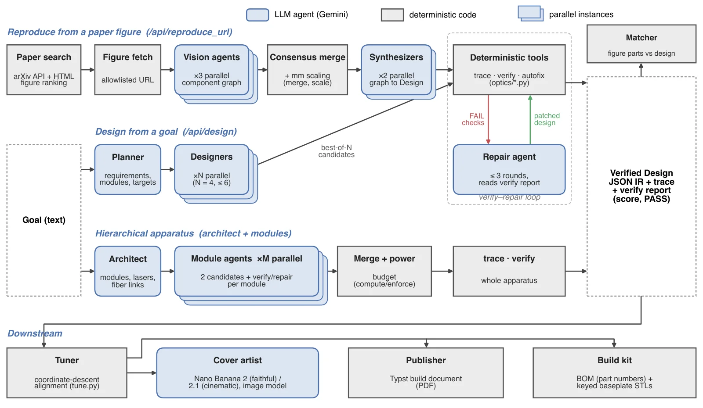
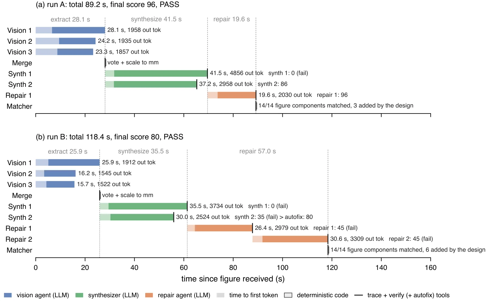
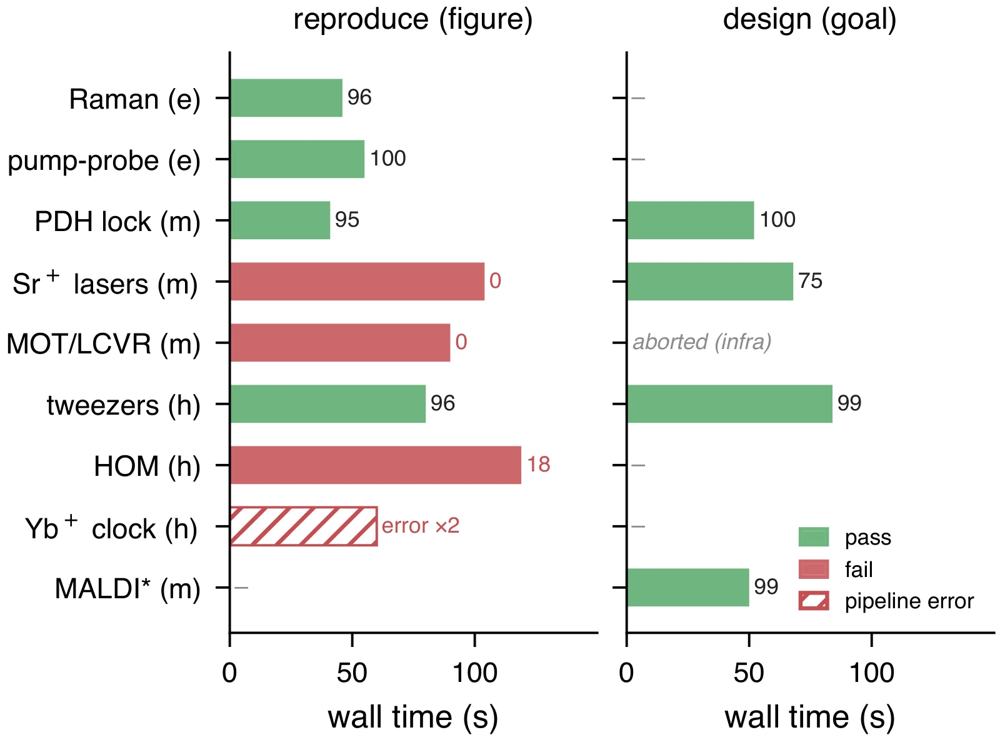
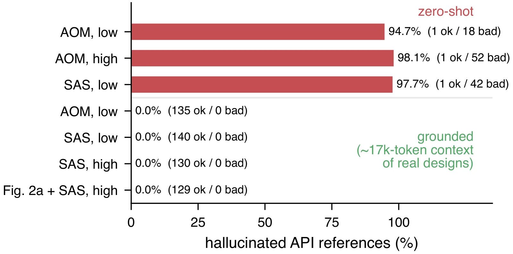
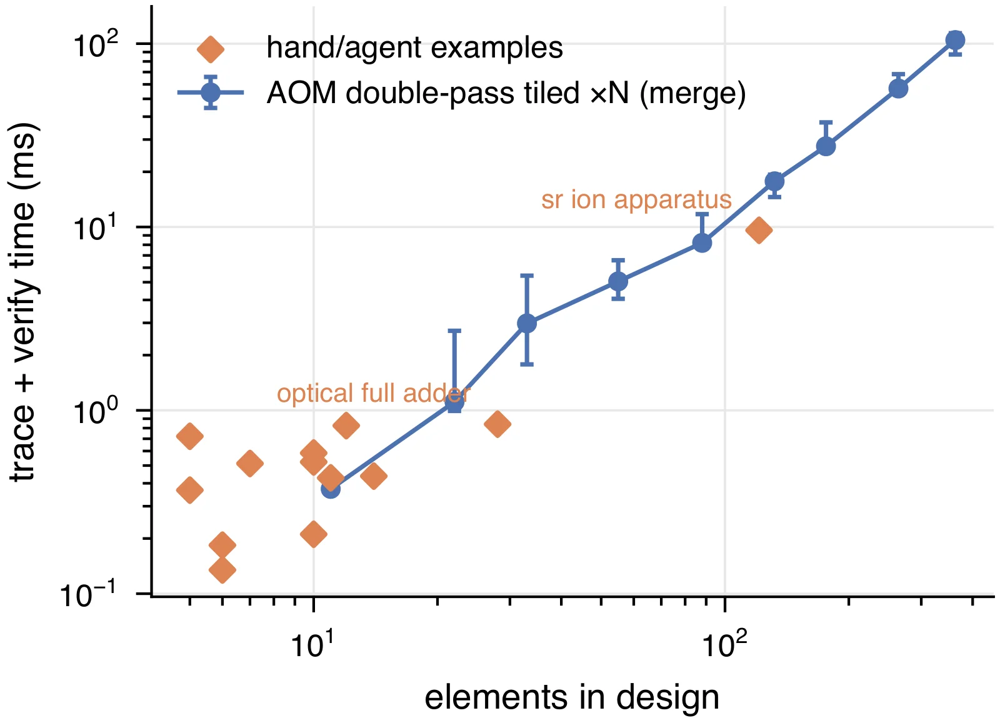
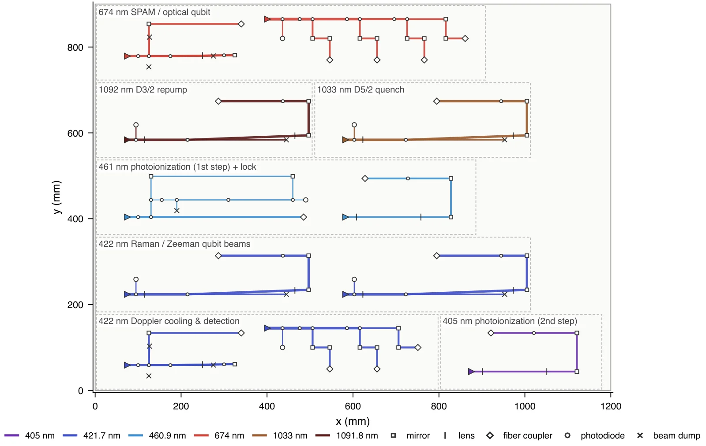
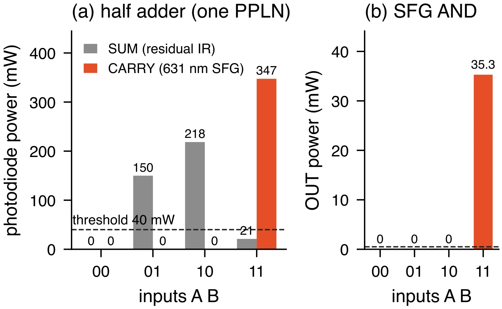
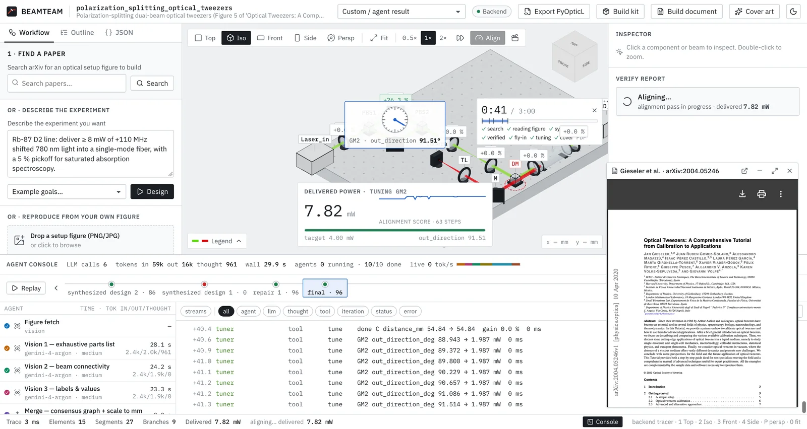
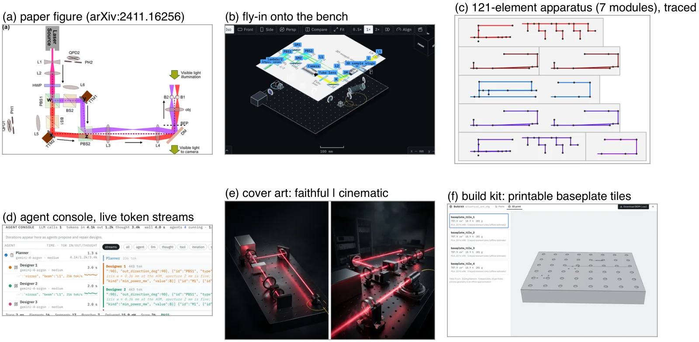
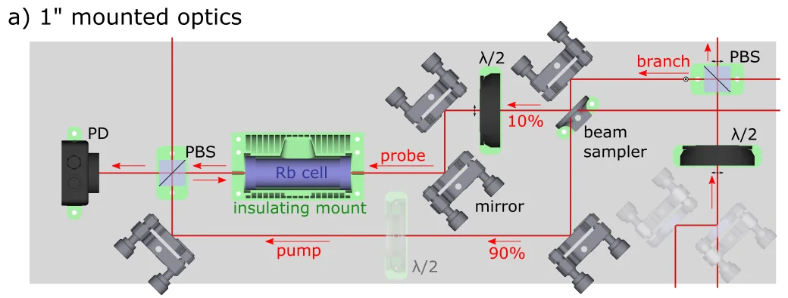

TL;DR Type a topic, pick a figure from an arXiv paper, and BEAMTEAM turns it into a laser-optics bench in under three minutes. Vision and synthesizer agents (Gemini gemini-4-argon) propose the layout. A deterministic Gaussian-beam/Jones tracer verifies every beam. The output is aligned, rendered and exported as a build kit: BOM, printable keyed baseplate and an assembly PDF.
Abstract
Laying out a tabletop laser-optics bench for an atomic or quantum physics experiment is weeks of careful manual work, and the designs that labs publish are usually just schematic figures. BEAMTEAM is a multi-agent system that designs these setups from a natural-language goal, or reproduces them from a figure in a paper. Three vision agents read the figure in parallel. A consensus vote with millimetre scaling turns their readings into a component/beam graph. Two synthesizer agents then build a design in a JSON intermediate representation.
Every design is checked by a deterministic physics tracer. It models Gaussian beams (ABCD/q), Jones polarization, power, AOM orders, fiber mode overlap and clipping. A verifier flags stray beams (laser safety), collisions, unplaced parts and unmet targets. A deterministic autofix and an LLM repair agent close the loop under a hard deadline. Verified designs are aligned by a deterministic tuner, rendered as journal covers and published as a Typst build document and build kit. The kit includes a bill of materials with part numbers, watertight keyed baseplate STLs, and a script for the PyOpticL code-to-CAD library.
Live, paper search to build-document PDF took 1:37 against a 3:00 budget. Three live figure-to-design runs on optical tweezers took 55–74 s and all passed. Grounding the model in real PyOpticL designs cut hallucinated API references from 95 % to 0 %. A 121-optic apparatus traces and verifies in about 6 ms. We also report where it fails: on 8 open-access figures, 4/8 reproductions pass verification but only 3/8 are physically faithful.
How it works
The LLMs propose, the physics disposes.

- Find a paperLive arXiv search ranks each paper's figures by how much they look like an optical setup.
- Read the figureThree vision agents read it in parallel. A consensus vote and millimetre scaling turn their readings into a component/beam graph.
- Synthesize & verifyTwo synthesizers emit the JSON IR. The tracer checks every beam; the verifier flags stray beams, collisions and unmet targets. Autofix adds validated beam dumps and a repair agent fixes the rest, under a hard 115 s deadline.
- Fly-in & alignParts drop from the drawing onto the 3D bench and the beams switch on. The bench is misaligned "as built", then a tuner walks every knob back to optimum.
- PublishA journal-cover render (Nano Banana 2) and a Typst build-document PDF: plan view, verification, BOM, 3D-print list, assembly, alignment and laser-safety notes.
- Build kit
BOM.csv, tiled baseplate STLs with keyed alignment-pin holes and beam-path grooves, a PyOpticL/FreeCAD script and an assembly README.
It also supports goal-to-design with best-of-N candidates and hierarchical design of whole apparatus: an architect plus parallel module agents with shared laser power budgets, e.g. a 121-optic Sr+ trapped-ion laser system. Other features are an agent console with colour-coded token streams per agent, and all-optical logic (SOA NAND, χ(2) sum-frequency half adder).

gemini-4-argon throughout. (a) Three parallel vision passes (23.3–28.1 s) agree 3/3 on 16 parts. The two synthesizers score 0 and 86, and one repair round raises the score to 96. Total time is 89.2 s with 14/14 figure components matched. (b) Deterministic autofix lifts synthesizer 2 from 35 to 80. Both repair rounds regress to 45 and are rejected, so the best design (80, PASS) is kept at 118.4 s. Light segments show time to first token; ticks mark deterministic trace/verify/autofix calls, each under 4 ms.Key results
Measured on 25 October 2026 on live Gemini calls. Raw runs are in demo/.
| Paper search → PDF, live, end to end | 1:37 (budget 3:00) |
| Figure → verified design (tweezers, 3 live runs) | 55 / 67 / 74 s, all PASS |
| Demo-figure reproduction reliability | 3/3 PASS, 41–55 s (concurrent) |
| Goal → verified design | ~45–85 s, scores 93–98 |
| Paper URL → bench (tweezers, arXiv:2004.05246) | PASS 95.4 in 73 s, 14/14 matched |
| Hierarchical: 6 modules in parallel | 96 optics, PASS 98.5, ~100 s |
| Alignment tuner, detuned AOM double-pass | 102 % of fiber power, 75 steps / 35 ms |
| Build kit, AOM double-pass | 18 parts + 58 hardware, ≈ $4.1k (est.), 2 tiles |
Reproducing published figures: an 8-figure stress test

| Figure | Diff. | Reproduce | Design |
|---|---|---|---|
| Raman backscatter | easy | 96 · 46 s† | – |
| Pump–probe delay | easy | 100 · 55 s | – |
| PDH thin-disk lock | med. | 95 · 41 s | 100 · 52 s |
| Sr+ ion-trap lasers | med. | 0 · 104 s | 75 · 68 s |
| MOT / LCVR laser system | med. | 0 · 90 s | aborted (infra) |
| Dual-trap tweezers | hard | 96 · 80 s | 99.5 · 84 s |
| HOM tomography (3D) | hard | 18 · 119 s | – |
| Yb+ clock laser (dense) | hard | error ×2 | – |
| MALDI (goal only) | med. | – | 99 · 50 s |
Score (0–100) · wall time; green = PASS. †Passes verify, but the long-pass filter is modelled as a dichroic that lets the 532 nm line through to the CCD. Source: demo/figures/RESULTS.md, which also lists failure patterns and fixes.
Grounding removes API hallucination

gemini-4-argon goal→code output that do not exist. Zero-shot: 94.7 % (AOM, low thinking), 98.1 % (AOM, high), 97.7 % (SAS, low). Grounded with ~17k tokens of real designs plus a signature digest: 0 % in all 4 runs (135/0, 140/0, 130/0, 129/0 valid/invalid refs).
Whole apparatus, and light that computes



Limitations (honest caveats)
- Simplified physics. The table model is planar (2D). Gaussian beams are round, lenses are thin, and there is no interference or coherence.
- Nonlinear elements are textbook steady-state models: SOA gain saturation and χ(2) SFG with perfect phase matching, CW only. The SOA NAND has about 5 dB contrast and is not cascadable in our model. The half adder uses one PPLN crystal with optimistic η.
- Reproduction works on clean schematics only. Dense multi-panel and 3D figures still fail (Yb+, HOM, MOT). A verifier PASS is not proof of correct physics: the Raman design passes while sending the laser line to the CCD. There is no "sample" or retro-scatter primitive.
- Notes are not always respected. Focal lengths and laser power given in the notes were sometimes replaced with "convenient" values. Hierarchical designs can come out as disconnected modules with one source each.
- Generated BOMs are estimates. Prices need checking with vendors, and nothing here replaces a laser-safety review.
Gallery
Screenshots from the web app (Vite + React + three.js), renders by the cover-artist agent, and pages of generated build documents. Click to enlarge.

In the app
Cover renders (Nano Banana 2 / 2.1)
gemini-3.1-flash-image).gemini-nano-banana-2.1).Generated build documents (Typst PDF)
Built on PyOpticL & open figures

PyOpticL (Myers et al., Quantum 2026; UMass Ion Trappers) is the code-to-CAD optics concept and library that BEAMTEAM's exporter targets, and our examples are modelled on its designs. It is referenced, not vendored. Left: PyOpticL paper Fig. 2a (Rb saturated absorption spectroscopy, CC BY 4.0), which we used as a test input. Thank you to the PyOpticL authors. BEAMTEAM would not exist without their work.
The benchmark inputs are open-access published figures, credited below as listed in demo/figures/catalog.json. They keep their original licenses. Figures from other arXiv papers, such as Gieseler et al., arXiv:2004.05246, are fetched live at runtime and are not redistributed.
| Figure | Source | License |
|---|---|---|
| Raman backscatter | Toommm (Wikimedia Commons), adapted from T. Schmid & P. Dariz, Heritage 2(2), 1662–1683 (2019) · source | CC BY 4.0 |
| Pump–probe delay | Joachim Terschluesen, "Pump probe setup.svg", Wikimedia Commons · source | CC0 1.0 |
| PDH thin-disk lock | M. Zeyen, L. Affolter, M. A. Ahmed, et al., Rev. Sci. Instrum. (2023) · arXiv:2210.05501 | CC BY 4.0 |
| Sr+ / Th3+ ion-trap lasers | G. Zitzer, J. Tiedau, M. V. Okhapkin, et al., Phys. Rev. A 109, 033116 (2024), Fig. 2 · arXiv:2312.05106 | CC BY 4.0 |
| MOT / LCVR laser system | B. Piest, V. Vollenkemper, J. Böhm, et al. · arXiv:2109.14277 | CC BY 4.0 |
| Dual-trap optical tweezers | M. A. Ashraf & P. Pullarkat · arXiv:2411.16256 | CC BY 4.0 |
| Yb+ clock laser | Y. Zuo, S. Cao, S. Dai, et al. · arXiv:2303.00361 | CC BY 4.0 |
| HOM tomography | Y. Tsujimoto, R. Ikuta, K. Wakui, et al., Phys. Rev. Applied 19 · arXiv:2205.11160 | CC BY 4.0 |
| Rb SAS (Fig. 2a) | PyOpticL paper, Myers et al., Quantum 2026 · PyOpticL | CC BY 4.0 |
_(2019)_1662-1683.png){kind=link}

What was built at the hackathon vs. what existed
Reproduced from the repository's Provenance section.
2026-10-25, 11:23 → present (see git log)
Everything in this repository:
- the design IR and API contract;
- the planar Gaussian-beam/Jones tracer, including nonlinear elements (SOA, SFG, saturable absorber);
- the verifier, autofix, alignment tuner and module merge;
- all agent pipelines: goal → design, figure → design, hierarchical, paper search, cover renders, console events and token streaming;
- the PyOpticL exporter;
- the BOM, tiled STL baseplates and the Typst build document;
- the web application;
- all examples, benchmarks, recorded runs and figures, the paper and the demo video.
The code was written by an AI coding assistant (Claude Code) and its sub-agents, under the team's direction, during the event.
- PyOpticL (Myers et al., Quantum 2026): the code-to-CAD optics concept and library that our exporter targets and our examples are modelled on. Not vendored; referenced only.
- Google Gemini models via API:
gemini-4-argon(agents); Nano Banana 2 / 2.1 (gemini-3.1-flash-image,gemini-nano-banana-2.1) for renders; Gemini TTS (demo narration). - Open-source libraries: three.js, React, @react-three/fiber, @react-three/drei, zustand, lucide-react, Vite, TypeScript; FastAPI, Pydantic, NumPy, google-genai, httpx, sse-starlette, uvicorn, manifold3d, trimesh, Pillow; Typst; ffmpeg.
- Published figures used as test inputs: open-access CC BY / CC0 figures with attribution in
demo/figures/catalog.json, plus the PyOpticL paper Fig. 2a (CC BY 4.0). Figures from other arXiv papers (e.g. Gieseler et al., arXiv:2004.05246) are fetched live at runtime and not redistributed.
BibTeX
@misc{beamteam2026,
title = {{BEAMTEAM}: Self-Driving Optical Engineering
with Multiagent Teams},
author = {Rauchwerk, Dave and {Claude Opus 5.5} and {Gemini 4 Argon}},
year = {2026},
howpublished = {\url{https://github.com/elevenarms/beamteam}},
note = {Hackathon project}
}
Acknowledgements
We thank the authors of PyOpticL (UMass Ion Trappers) for the code-to-CAD optics library and paper that inspired this project. We also thank the authors of every open-access figure listed above for licensing their work so others can build on it.
- Models: Google Gemini
gemini-4-argonfor all agents; Nano Banana 2 / 2.1 (gemini-3.1-flash-image,gemini-nano-banana-2.1) for cover renders; Gemini TTS for the demo narration. - Code: written with Claude Code (Anthropic) and its sub-agents, under the team's direction, during the hackathon.
- Libraries: three.js, React, @react-three/fiber, @react-three/drei, zustand, lucide-react, Vite, TypeScript, FastAPI, Pydantic, NumPy, google-genai, httpx, sse-starlette, uvicorn, manifold3d, trimesh, Pillow, Typst and ffmpeg.